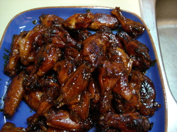
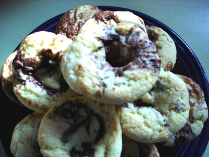

Chicken wings and cupcakes
Poppy, Calvin, and I attended the Pirates’ home opener on Monday and the guys did not eat chicken wings the way they usually do, so I decided to make Lynne Rosetto Kasper’s Mahogany-Glazed Chicken Wings for dinner tonight. I had eight people at my table, five of them men, and these wings are definitely man-pleasers. The recipe says that 3-4 lbs. of wings will serve 4-6 people with leftovers. I had 6 1/2 lbs. and every wing was eaten, along with a huge salad, a big bowl of fried rice, and home made applesauce.

For dessert I tried a recipe that’s apparently been going the rounds of food blogs, self-frosting cupcakes. I learned about them when I followed a link in a comment on my Martha Stewart caramel nut bar post and discovered a delightful blog entitled Creampuffs in Venice, whose author was rhapsodizing about these very cupcakes. My photo doesn’t look quite like hers or the original but perhaps it’s because I used self-rising flour. I saw that the recipe had baking powder and salt in it so I figured why not—I’m always trying to use this short cut and sometimes it backfires on me. The cupcakes were really good, though, with their pocket of Nutella, and I might try them with lemon curd next time. I was planning to use the lemon curd version tonight, reasoning they would suit my vaguely Asian-themed dinner a little better, but when I opened the jar of lemon curd I planned to use it was all brown on top and smelled like my oldest son’s sneakers did before he had that foot condition treated last year. How long does that stuff keep, anyway?

Comments
Hey … those cupcakes look very fine to me! Mind you I would have a cupcake in one hand and one of those glorious wings in the other!
Thanks, Ivonne, but you can see from the photo how much less shapely they are than yours and Nic’s—I think that must be a result of using the self-rising flour. It probably has too much baking powder in it. And I do wonder about temperatures in my elderly oven, especially the low ones, like the 325º called for here. At 20 minutes the cakes were still so pallid that I left them in for a little longer and then they were a tiny bit dry. I may raise the temperature a tad next time. I have broken so many oven thermometers that I have given up on them and am just saving my money for a new stove.
Add a comment